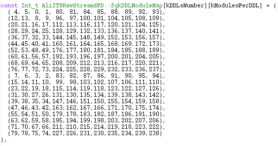
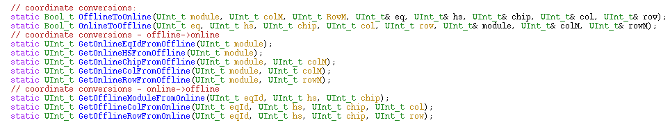
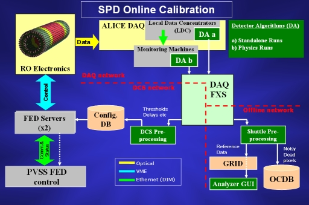

============================================================================
Description of ALICE Silicon Pixel Detector (SPD) Code (Rev. 1.00 — May 8, 2008 — D. Elia)
============================================================================
1. SPD module geometrical description
3. Simulation
SPD module geometrical description
The SPD module geometrical description is managed by the AliITSsegmentationSPD class.
This offline module corresponds to half of a single SPD basic unit (the half-stave which is made of 2 ladders), so it corresponds to a single SPD ladder. In total the SPD consists of 240 modules, 80 on the inner layer and 160 on the outer layer. The module is divided into 5 chips with the corresponding sensor cells connected to 5 independent read-out matrices.
The single pixel cell size is 425 microns (local Z) x 50 microns (local X). Pixels at the boundary between adjacent chips in the module are 625 microns wide in Z.
The single chip has 32 columns (local Z) x 256 rows (local X).
The single module size is 6.96 cm (local Z) x 1.28 cm (local X). The sensor is 200 microns thick. The read-out chip is 150 microns thick.
The module numbering and the correspondence between online and offline conventions are illustrated here. In the AliITSRawStreamSPD class the raw data is decoded and so-called digits are extracted. Inside this class a module map matrix (fgkDDLModuleMap[][]) is used:

This map specifies how the modules
are numbered (the rows of the matrix represent different equipment
ids, the columns have the 2 ladders of hs0, the 2 ladders of hs1, and
so on...).
Then one also needs to take the columns and rows
numbering into account.
To make the conversion between online and offline coordinates there are the following static member functions in AliITSRawStreamSPD:

=================================================================================================================
The SPD raw data are decoded by the AliITSRawStreamSPD class.
The SPD has equipment IDs from 0 to 19, each corresponding to the readout of one half sector. The geometrical map of the DDLs is illustrated here.
Each equipment starts with the Equipment Header (15 32-bit words) of which the last 8 words are known as the Common Data Header, CDH (8 32-bit words). After these headers, sometimes a Calibration Header appears (for dedicated calibration runs). This extra header has variable length, depending on the type of calibration scan. Finally, there is the actual data words, i.e. which pixels are hit in the event. This part has a variable length depending on the number of hits. Further details on the various headers and the data word formats can be found here.
=================================================================================================================
The SPD digitization is implemented in the AliITSsimulationSPD class and managed via the AliITSDetTypeSim class.
It is based on the following working scheme:
1) Hits --> SDigits (AliSimulation::RunSDigitization)
-> AliITS::Hits2SDigits
-> AliITS::Hits2Predigits
-> AliITSsimulationSPD::SDigitiseModule
-> AliITSsimulationSPD::HitToSDigitFast
- read hits, gets parameters for diffusion (temperature, thickness over bias voltage, asymmetry of gaussian diffusion, etc.) and for electronic coupling from OCDB
- apply electron cloud diffusion (gaussian smearing) along z and r*phi
- eventually apply the Lorentz drift to the electron cloud (by default null Lorentz drift)
- apply coupling between adiacent pixels
-> AliITSsimulationSPD::RemoveDeadPixel
- remove dead pixels as stored in the calibration object
-> AliITSsimulationSPD::WriteSDigits
- write SDigits to file, basically call AliITS::AddSumDigit (which calls AliITSDetTypeSim::AddSumDigit) to write SDigits (AliITSpListItem) to file
2) SDigits --> Digits (AliSimulation::RunDigitization)
-> AliITSDigitizer::Exec
- load SDigits
-> AliITSsimulationSPD::FinishSDigitiseModule
- call AliITSsimulationSPD::FrompListToDigits
- eventually add electronic baseline and noise, perform the zero suppression and add the digits to the list (by calling AliITS::AddSimDigit)
A detailed description of the SPD response model (in AliITSsimulationSPD::HitToSDigitFast) can be found here (ALICE-INT-2008-003 and references therein). The model parameters are stored in two OCDB files under $ALICE_ROOT/ITS/Calib:
1) RespSPD: contains 1 AliITSresponseSPD object with parameters common to all the modules (coupling type and diffusion asymmetry)
2) SPDDead: contains 1 TOjArray with 240 AliITSCalibrationSPD objects, i.e. 1 AliITSCalibrationSPD object for each module with the list of dead pixels (see calibration section below) and the other parameters needed to the response model (threshold, noise, coupling strength, bias-over-voltage)
========================================================================================================================
The SPD local reconstruction is implemented in AliITSClusterFinderV2SPD class and managed via the AliITSDetTypeRec class.
It is based on the following working scheme:
Cluster Finding (AliReconstruction::RunLocalEventReconstruction)
-> AliITSReconstructor::Reconstruct
-> AliITSDetTypeRec::DigitsToRecPoints
- Based on the input data (simulation digits or simulation/real raw data), there are two possibilities:
A) RECONSTRUCTION FROM DIGITS
-> AliITSClusterFinderV2SPD::FindRawClusters
- call AliITSClusterFinderV2SPD::FindClustersSPD
- build AliBin array from digit tree
- call AliITSClusterFinderV2SPD::ClustersSPD
B) RECONSTRUCTION FROM RAW DATA
-> AliITSClusterFinderV2SPD::RawdataToClusters
- instantiate AliITSRawStreamSPD object
- call AliITSClusterFinderV2SPD::FindClustersSPD
- build AliBin array from raw data
- call AliITSClusterFinderV2SPD::ClustersSPD
-> AliITS ClusterFinderV2SPD::ClustersSPD
- loop on dead pixels as stored in the calibration objects and reset them (corresponding AliBin elements)
- loop on AliBin elements and:
1) find cluster (FindCluster)
2) unfold cluster if allowed (this is set via AliITSRecoParam, the default is unfolding off)
3) calculate cluster coordinates and sigmas
4) add cluster to cluster array
===============================================================================================================================
For the SPD there are two types of processes, called Detector Algoritms (DAs), running on the DAQ network to produce output transported via the File Exchange Server (FXS) to the Offline and Detector Control System (DCS) networks. The following picture illustrates how the Online Calibration scheme works:

In case a the calibration is performed as a standalone scan. The raw data collected on the Local Data Concentrators (LDCs) are analyzed. In case b the calibration is performed on a regular physics run and the data is analyzed online through the DATE monitoring functionality. Further details on the types of runs and scans and a global overview of the SPD calibration can be found here.
The so-called Shuttle brings the output files from the FXS to DCS and Offline networks. Here the data go through a second level of processing, generally called preprocessing. Finally, the Offline Calibration Database (OCDB) and the DCS Configuration Database are updated.
The procedures also produce so-called Reference Data, basically raw data summaries, which can later be used offline to reconstruct the calibration output. This may be useful for instance for debugging purposes. A Reference Data Displayer (GUI) program has been developed to simplify the analysis of the Reference Data.
The two top level classes corresponding to Standalone Calibration Runs and Physics Runs are ITSSPDSCANda and ITSSPDPHYSda respectively. The Offline Preprocessing is implemented in the AliITSPreprocessorSPD class. It takes care of saving the reference data and put information relevant for the offline reconstruction (lists of dead and noisy pixels) in the OCDB.
The calibration files in the OCDB are stored in two directories under $ALICE_ROOT/ITS/Calib:
1) SPDDead: contains 1 TOjArray with 240 AliITSCalibrationSPD objects, i.e. 1 AliITSCalibrationSPD object for each module with the list of dead pixels and some parameters needed to the response model
2) SPDNoisy: conatins 1 TOjArray with 240 AliITSCalibrationSPD objects, i.e. 1 AliITSCalibrationSPD object for each module with the list of noisy pixels
The noisy pixel search is always based on one run only. There is a minimum number of events required to do the search which is basically performed at the level of one read-out chip (8192 pixels). The dead pixel search may span several runs, in order to collect more statistics (which is mandatory for the p-p runs). Also here there is a minimum number of events required to even try to perform the search. The search requires that a noisy pixel search has been done first. The noisy pixels are then removed from the hit-maps before the dead pixel search. Also the dead pixel search is basically performed on the level of one read-out chip. For further details on the dead and noisy pixel search see here.